Chapter 3: 微小振幅波理論
Table of Contents
參考資料:
- Sorensen, R.M., Basic Coastal Engineering, 3rd edition, 2006, Springer.
1. 前言
海岸工程師必須擁有一個基本且相對易於使用的理論，以瞭解二維水波的重要特徵，並可分析波浪從深海傳播到海岸時的變化。此外，該理論將被用作描述更復雜的波浪頻譜的基石。本章將介紹這種理論—微小振幅波理論 (small-amplitude wave theory)—以及充分描述二維水波特徵和行為所需的相關材料。
2. 表面重力水波
如前章所述，不同驅動力產生的水波具有不同的週期。風產生的水波週期約為 1 至 30 秒，而其中由海洋風暴產生水波週期主要在 5 至 15 秒之間。船隻產生的波浪週期較短，通常在 1 到 3 秒之間。地震產生的海浪（海嘯）的週期從大約 5 分鐘到 1 小時不等，潮汐的主週期約為 12 小時和 24 小時。
海洋中的風浪波高（波峰至波谷的垂直距離）通常小於 3 公尺，但在顯著的風暴期間可以超過 6 公尺。船隻波浪的波高很少超過 1 公尺。在海中，海嘯的波高被認為約 0.6 公尺或更小；但隨著海嘯向近岸傳播，波高通常會增加到 3 公尺以上，這取決於近岸地形的性質。同樣，深海的潮汐波高 (潮差, tidal range) 相對較低，但許多地方的沿岸潮差可超過 6 公尺。
風產生的水波是很複雜的，是由具有不同波高和週期的多個成分波疊加所組成。在本章中將介紹二維單頻波 (monochromatic waves) 在固定水深中傳播的特徵和行為之最簡單理論。此單頻波可作為真實海中紛紜的波浪頻譜的一個組成成分，將在後面的章節中討論。以此單頻波的波高和週期來進行初階的工程計算，亦可有效地代表更複雜的波譜影響。此外，許多實驗研究將繼續使用單頻波來探討波的特徵和行為，如結構物所受的波力或碎波 (breaking wave) 的性質。
最簡單且通常最有用的理論，是英國的數學與天文學家 G. B. Airy 首先於 1845 年提出的二維微小波振幅理論 (或稱為線性波理論)，可參見其著作 Tides and Waves。該理論提供了計算水表面重力波的大部分運動和動力學特性的方程式，並在許多實際情況下可有效預測這些性質。本章介紹了推導微小振幅波理論所需的假設、其大致的推導過程、由此產生的相關方程式以及其所描述的水波重要特性。
3. 微小振幅波理論 (Small-Amplitude Wave Theory)
3.1. 基本假設
探討二維、自由傳播、週期性重力波的微小振幅理論，是透過線性化自由表面邊界條件的方程式所發展的。有了適當的水面和底床邊界條件，可得到滿足非旋流動之週期性速度勢 (velocity potential)。除了在空氣-水之交界面和底部的薄邊界層中，此速度勢基本上可適用於整個水體，並可用於推導各種水波特徵（例如水面的輪廓、波速、壓力場和水粒子運動）的方程式中。所需要的假設有：
- 水為均質和不可壓縮，且表面張力可以忽略不計。因此，沒有內部壓力或內重力波的影響 (即無內部的溫差、鹽度及密度差的影響)，而波長大於表面張力波的尺度。
流動是不旋轉的。因此，空氣-海洋交界面或底床沒有剪應力影響。風影響下的波浪（正在生成或減弱）不被考慮在內，而流體在底床和其他固體表面上可自由滑移。因此，水流速度 \(\mathbf{u}\) 可用速度勢 \(\phi\) 表示之：
\begin{equation} \label{eq:1} \mathbf{u} = \nabla \phi = \frac{\partial \phi}{\partial x}\hat{\mathbf{i}} + \frac{\partial \phi}{\partial z}\hat{\mathbf{k}} \end{equation}其中 \(x\), \(z\) 分別為水平與垂直之座標。而因為流體不可壓縮之故，速度勢可滿足 Laplace equation:
\begin{equation} \label{eq:2} \nabla\cdot\mathbf{u} = \nabla^{2}\phi = \frac{\partial^{2}\phi}{\partial x^{2}}+\frac{\partial^{2}\phi}{\partial z^{2}} = 0 \end{equation}- 底床為靜止、不可滲透和水平的。因此，底床不會從水流中新增或移除能量，或是反射波能。當波浪在傾斜的底床上傳播時，例如向近岸地區的海岸前進，如果斜坡不太陡峭，通常可以透過假設水平底床來近似。
- 沿空氣-海洋交界面的壓力是恆定的。因此，風不會施加壓力，波峰和波谷之間的氣動壓力差可以忽略不計。
與波長和水深相比，波高相對很小。由於粒子速度與波高成正比，並且波速（相速度）與水深和波長有關，因此這要求粒子速度與波速相比要較小。這個假設允許將高階自由表面邊界條件線性化，並在靜水位而不是水面上應用這些邊界條件，以獲得更簡單的解決方案。這種假設意味著，對於深水中波高較高的波、淺水中和接近碎波時 (其波峰和波峰粒子速度接近波速)，微小振幅波理論將受到限制。即使如此，微小振幅理論仍然非常有用，並廣泛用於水波的分析。
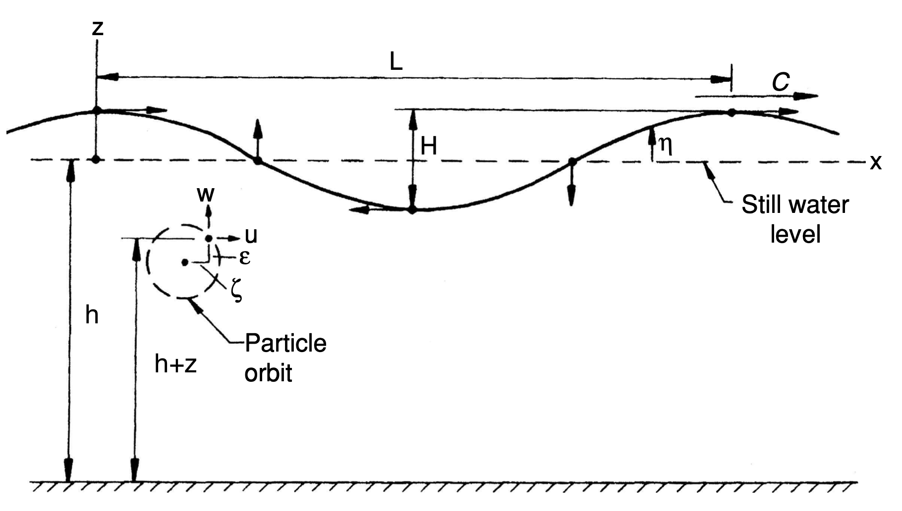
Figure 1: 線性前進波參數定義。
3.2. 問題定義與求解
圖 1 描繪了單頻波在 \((x,z)\) 座標系中深度 \(h\) 的水面上以相速度 (波速) \(C\) 移動。\(x\) 軸即靜水位的位置，底床為 \(z = -h\)。水波表面由 \(z = \eta\) 定義，其中 \(\eta\) 為以靜水位為基準之水面高程，是 \(x\) 和時間 \(t\) 的函數。波長 \(L\) 和波高 \(H\) 亦如圖所示。由於波在一個週期 \(T\) 中移動的距離為 \(L\)，故波速 \(C\) 為
\begin{equation} \label{eq:3} C = L/T \end{equation}波峰、波谷和靜水位處的箭頭指初了水粒子在表面運動的方向。當波從左到右傳播時，這些運動導致水粒子在順時針軌道上移動。水粒子的速度和軌道尺寸隨著靜止水線以下深度的增加而縮小。在任何瞬間，水粒子速度的水平和垂直分量分別為 \(u\) 和 \(w\)。水粒子在任何瞬間的水平和垂直座標分別為 \(\zeta\) 與 \(\varepsilon\)，此局部座標參照到粒子軌跡的中心。
下列無因次參數常被使用：
- 波數 (wave number): \(k = 2\pi/L\)，物理意義為波之密度，即沿波傳方向單位長度內波的數目 (每 \(2\pi\) 相位是一個波)。
- 角頻率 (angular frequency): \(\omega = 2\pi/T\), 在數值上是頻率 \(f\) (\(f= 1/T\)) 的 \(2\pi\) 倍。使用角頻率而非頻率作為變量可以避免出現額外的 \(\pi\)，從而簡化公式。
在討論波浪條件時，還會使用一些術語如 ``波浪尖銳度'' (wave steepness)，即波高除以波長 (\(H/L\))，和 ``相對水深'' (relative depth)，即水深除以波長 (\(h/L\)) 等等。
微小振幅波理論是透過求解式 (\ref{eq:2}) 而發展的，並配合圖 1 所示的自由液面和底床的適當邊界條件。
在底床，因為沒有垂直於底部的水流，故可定義出底床邊界條件 (Bed Boundary Condition, BBC):
\begin{equation} \label{eq:4} w = \frac{\partial\phi}{\partial z} = 0\quad\mbox{at } z = -h \end{equation}在自由液面有一個運動邊界條件 (Kinematic Free Surface Boundary Condition, KFSBC)，代表在水面上水粒子的速度與波速一致，亦即水粒子不會離開水面而讓波形維持。由於水面剖面可由函數 \(f(x,z,t) = z-\eta(x,t) = 0\) 來定義，故在水面上以水粒子的速度移動而觀察到的函數值不會變化。這可由函數 \(f\) 的實質導數 (material derivative) 來表示：
\begin{equation} \label{eq:5} \frac{Df}{Dt} = \frac{\partial f}{\partial t} + \mathbf{u}\cdot\nabla f = 0 \end{equation}可得到
\begin{equation} \label{eq:6} w = \frac{\partial \eta}{\partial t} + u\frac{\partial\eta}{\partial x} \quad\mbox{at }z = \eta \end{equation}對於非穩態之不可壓縮流，Bernoulli equation 為
\begin{equation} \label{eq:7} \frac{\partial\phi}{\partial t} + \frac{1}{2}(u^{2}+w^{2}) + \frac{p}{\rho} + gz = C \end{equation}其中 \(g\) 為重力加速度，\(\rho\) 為水體密度，\(p\) 為壓力，\(C\) 為常數。在水面上可定義壓力 \(p\) 及常數 \(C\) 均為零，故可得到自由液面動力邊界條件 (Dynamic Free Surface Boundary Condition, DFSBC) 為
\begin{equation} \label{eq:8} \frac{\partial\phi}{\partial t} + \frac{1}{2}(u^{2}+w^{2}) + g\eta = 0 \quad\mbox{at } z = \eta \end{equation}經過線性化後，KFSBC 和 DFSBC 可以應用於靜水面 (\(z = 0\))，而不是尚未知的水面 (\(z = \eta\))。如此可得到線性化之 KFSBC 為
\begin{equation} \label{eq:9} w = \frac{\partial\eta}{\partial t}\quad\mbox{at } z = 0 \end{equation}而線性化之 DFSBC 則為
\begin{equation} \label{eq:10} \frac{\partial\phi}{\partial t} + g\eta = 0 \quad\mbox{at } z = 0 \end{equation}利用 Laplace equation、BBC 和線性化的 DFSBC，可以推論出微小振幅波理論的速度勢為以下形式：
\begin{equation} \label{eq:11} \phi = \frac{gH}{2\omega}\frac{\cosh k(h+z)}{\cosh kh}\sin (kx-\omega t) \end{equation}此速度勢顯示了一個重點。由於波長或波數 (\(k = 2\pi/L\)) 取決於波週期和水深[見方程。 (2.14)]，故當知道波高、週期和水深時，波是可以完全定義出來的，並可以計算出其所有的特性。
將速度勢代入 \(z = 0\) 的線性化 DFSBC，可以得到水面波形的方程式：
\begin{equation} \label{eq:12} \eta = \frac{H}{2}\cos (kx-\omega t) \end{equation}亦可用波數與角頻率的定義表示為
\begin{equation} \label{eq:13} \eta = \frac{H}{2}\cos 2\pi\left(\frac{x}{L}-\frac{t}{T}\right) \end{equation}如此，微小振幅波理論產生了餘弦的水面波形。這對於較小振幅的水波是合理的，但隨著波振幅的增加，非線性效應增強，波形將在垂直方向變得不對稱，具有較尖的波峰和較平緩的波谷。
結合 KFSBC 與 DFSBC 並消去水面高程項後可得
\begin{equation} \label{eq:14} \frac{\partial^{2}\phi}{\partial t^{2}}+g\frac{\partial\phi}{\partial z} = 0\quad\mbox{at } z = 0 \end{equation}將速度勢代入並經過整理後可得
\begin{equation} \label{eq:15} \omega^{2} = gk\tanh kh \end{equation}式 (\ref{eq:15}) 一般稱為頻散關係式 (dispersion relation or dispersion equation)。使用波速的定義，可將式 (\ref{eq:15}) 表示為
\begin{equation} \label{eq:16} C = \frac{L}{T} = \frac{\omega}{k} = \sqrt{\frac{g}{k}\tanh kh} \end{equation}或
\begin{equation} \label{eq:17} C = \sqrt{\frac{gL}{2\pi}\tanh \frac{2\pi h}{L}} \end{equation}式（\ref{eq:16}）與 (\ref{eq:17}) 表明，對於微小振幅波而言，波速與波高無關。隨著波高的增加而產生非線性效應後，波高對於波速則有微小但愈來愈明顯的影響。
式 (\ref{eq:15}) 亦可表示為
\begin{equation} \label{eq:18} C = \frac{gT}{2\pi}\tanh \frac{2\pi h}{L} \end{equation} \begin{equation} \label{eq:19} L = \frac{gT^{2}}{2\pi}\tanh \frac{2\pi h}{L} \end{equation}由式 (\ref{eq:19}) 可知，若知道水深和週期，則可以透過試誤法計算出波長。然後波速可從 \(C = L/T\) 算出。
由上述的頻散關係式可知，對於具有不同週期 (或波長) 成分波之波群，較長的波將以更高的速度傳播而領先於波群，而較短的波將落後。
經由證明，當波浪從深水傳播到海岸時，波浪週期將保持不變，因為在給定的時間間隔內透過序列位置的波浪數量必須是恆定的。其他波浪特徵，包括速度、波長、波高、表面波形、粒子速度和加速度、壓力場和能量，在從深水到近岸地區時都會有所不同。
4. 依水深進行水波分類
4.1. 以相對深度分類
表面波的一個重要分類是基於相對深度 (\(h/L\))。由 式 (\ref{eq:19}) 可知，當波浪從離岸的深水區傳播到近岸的淺水區時，波長會減少，但減少的速率比深度的降低來得慢。因此，隨著波浪向岸邊傳遞，相對深度會下降。由於速度勢中雙曲線函數的特性，故可依據相對深度的範圍定義出深水波 (deep water waves)、中間水深波 (intermediate water waves) 與淺水波 (shallow water waves)：
- 深水波：\(h/L > 1/2\) (即 \(kh > \pi\))；
- 中間水深波：\(1/20 < h/L < 1/2\) (即 \(\pi/10 < kh < \pi\))；
- 淺水波：\(h/L < 1/20\) (即 \(kh < \pi/10\))。
相對深度對於波浪的影響可參見圖 2。
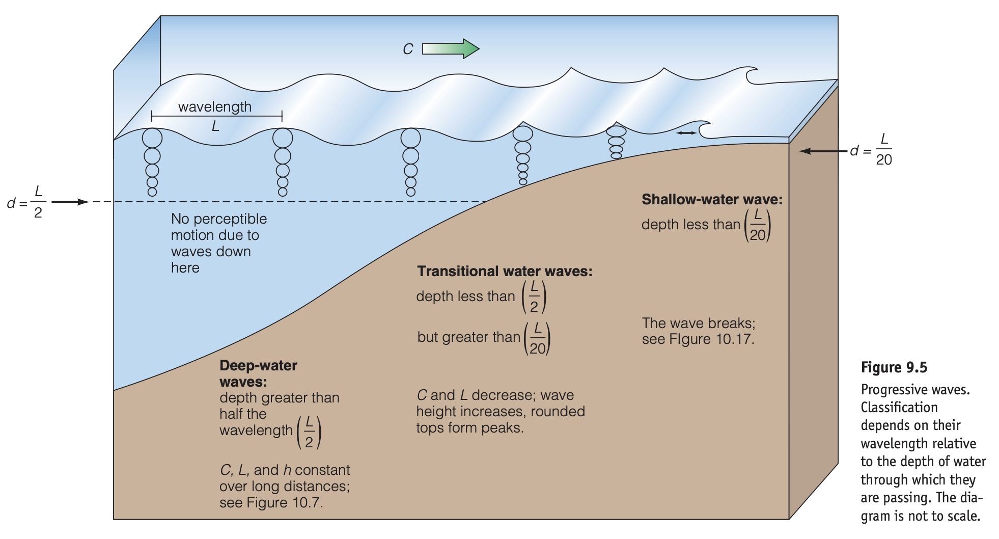
Figure 2: 相對深度對於波浪的影響 (圖中的水深符號為 \(d\))。
4.2. 深水波 (deep water waves)
在深水的條件下 (\(h/L > 1/2\), \(kh > \pi\))，雙曲線函數可做以下的近似：
\begin{equation} \label{eq:20} \sinh kh = \frac{1}{2}\left(e^{kh}-e^{-kh}\right) = \frac{1}{2}e^{kh} \quad\mbox{for } kh\to \infty \end{equation} \begin{equation} \label{eq:21} \cosh kh = \frac{1}{2}\left(e^{kh}+e^{-kh}\right) = \frac{1}{2}e^{kh} \quad\mbox{for } kh\to \infty \end{equation} \begin{equation} \label{eq:22} \tanh kh = 1\quad\mbox{for } kh\to \infty \end{equation}因此，式 (\ref{eq:17}) 至 (\ref{eq:19}) 可以簡化為
\begin{equation} \label{eq:23} C = C_{0} = \sqrt{g/k_{0}} = \sqrt{\frac{gL_{0}}{2\pi}} \end{equation} \begin{equation} \label{eq:24} C = C_{0} = \frac{gT}{2\pi} \end{equation} \begin{equation} \label{eq:25} L = L_{0} = \frac{gT^{2}}{2\pi} \end{equation}其中下標 0 代表深水波的特徵 (波數、波速與波長)。
由於水粒子速度和軌跡尺寸隨著自由表面以下距離的增加而減少，故在深水中，所處位置深度若大於水深的一半 (\(-z/L > 0.5\))，則粒子速度和軌跡尺寸接近於零。由於當 \(d/L > 0.5\) 時波不會與底床相互作用，因此波的特徵與水深無關。
例題 3.1
100 m 深的水中波浪週期為 10 s，高度為 2 m。 請求出波的速度、長度和尖銳度 (steepness)。波峰的水粒子速度是多少？
解答: 假設此為深水波，故由式 (\ref{eq:25}) 可知 \[ L_{0} = \frac{9.81 (10)^{2}}{2\pi} = 156~\mathrm{m} \] 由於深度大於計算所得波長的一半，故此波在深水中且波長為 156 m。否則便需要使用式 (\ref{eq:19}) 方可計算波長。波速則為 \[ C_{0} = \frac{L_{0}}{T} = \frac{156}{10} = 15.6~\mathrm{m/s} \] 而尖銳度則為 \[ \frac{H_{0}}{L_{0}} = \frac{2}{156} = 0.013 \] 對於深水，水粒子軌跡是圓形的，水面處的直徑等於波高。由於粒子在一個波週期內完成一個軌跡，因此波峰的粒子速度將是軌道周長除以週期 \[ u_{c} = \frac{\pi H_{0}}{T} = \frac{3.14(2)}{10} = 0.63~\mathrm{m/s} \] 可發現水粒子速度遠低於波速 \(C_{0}\)。
4.3. 中間水深波 (intermediate water waves)
當相對深度小於 0.5 時，波與底床將相互作用。波的特性與水深和波週期均有關，且隨著水深減少而持續地改變。當相對深度介於 0.05 至 0.5 之間時，計算波速與波長需要使用完整的頻散關係式，稱為中間水深波或是變遷水波 (intermediate or transitional water waves)。由式 (\ref{eq:18}), (\ref{eq:19}) 及 (\ref{eq:23}), (\ref{eq:24}) 可知，
\begin{equation} \label{eq:26} \frac{C}{C_{0}} = \frac{L}{L_{0}} = \tanh \frac{2\pi h}{L} \end{equation}4.4. 淺水波 (shallow water waves)
在淺水的條件下 (\(h/L < 1/20\), \(kh < \pi/10\))，雙曲線函數可做以下的近似：
\begin{equation} \label{eq:27} \sin kh = kh\quad\mbox{for } kh \to 0 \end{equation} \begin{equation} \label{eq:28} \cosh kh = 1\quad\mbox{for } kh \to 0 \end{equation} \begin{equation} \label{eq:29} \tanh kh = kh\quad\mbox{for } kh \to 0 \end{equation}則頻散關係式可簡化為
\begin{equation} \label{eq:30} C = \sqrt{gh} \end{equation} \begin{equation} \label{eq:31} L = \sqrt{gh}T \end{equation}這個相對深度區域的波浪被稱為淺水波。在淺水中，微小振幅波理論得出的波速與波週期無關，並且只取決於水深。換言之，不同週期的波因為具有相同波速而不會分散 (非頻率分散或稱週期分散)。後續章節將介紹的的有限振幅波理論 (finite-amplitude wave theories) 表明，淺水波速度是水深和波高的函數，因此淺水波具有振幅分散的特性。請記住，深水、中間性水深和淺水條件是相對深度，而不是指實際深度。 例如潮汐是一種非常長的波浪，即便在海洋最深處其表現仍為淺水波。
例題 3.2
考慮例題 3.1 中的波傳播到水深 2.3 m 的近岸時，計算波的速度和長度。
解答: 假設在近岸處為淺水波，則由式 (\ref{eq:30}) 可知，波速為 \[ C = \sqrt{9.81(2.3)} = 4.75~\mathrm{m/s} \] 波長則為 \[ L = CT = 4.75(10) = 47.5~\mathrm{m} \] 由於 \(h/L = 2.3/47.5 = 0.048 < 0.05\)，故淺水波的假設是正確的。請與例題 3.1 比較結果的不同。
5. 波浪的頻散現象
5.1. 前進波的頻散現象
由頻散關係式可知，特定頻率的前進波必有特定的波數。以無因次式可表示為
\begin{equation} \label{eq:66} \omega(h/g)^{1/2} = (kh\tanh kh)^{1/2} \end{equation}無因次頻率 \(\omega(h/g)^{1/2}\) 和無因次波數 \(kh\) 之變化如圖 3 所示。其極限近似值是
\begin{eqnarray} \omega &\simeq (gh)^{1/2}k,\quad &kh \ll 1\mbox{ (shallow water)},\nonumber \\ \omega &\simeq (gk)^{1/2},\quad &kh \gg 1\mbox{ (deep water)}. \end{eqnarray}可知對於固定 \(h\)，較短的波具有更高的頻率。在淺水中，固定頻率的波在較淺的深度中波長較短，因為 \(k\simeq \omega/(gh)^{1/2}\)。
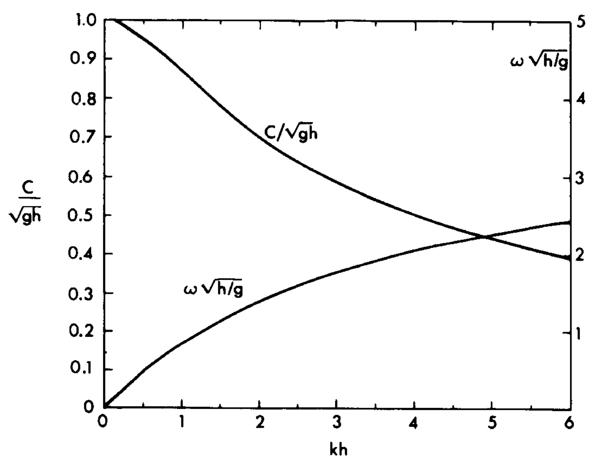
Figure 3: 前進波的頻散曲線。
波速則為
\begin{equation} \label{eq:67} C = \left(\frac{g}{k}\tanh kh\right)^{1/2} \end{equation}亦以無因次形式繪於圖 3 中。其長波與短波 (即淺水波與深水波) 的極限關係為
\begin{eqnarray} \label{eq:68} C&= (gh)^{1/2},\quad &kh \ll 1\mbox{ (shallow water)}\nonumber \\ C&= (g/k)^{1/2},\quad &kh \gg 1\mbox{ (deep water)}. \end{eqnarray}一般來說，對於相同的深度，較長的波速度更快。隨著時間的流逝，較長的波浪引導較短的波浪。 隨著擾動向外傳播，最長和最短的波越來越遠，中間波在中間行進。不同頻率的波以不同速度傳播的現象被稱為頻散。
5.2. 涌浪 (swell)
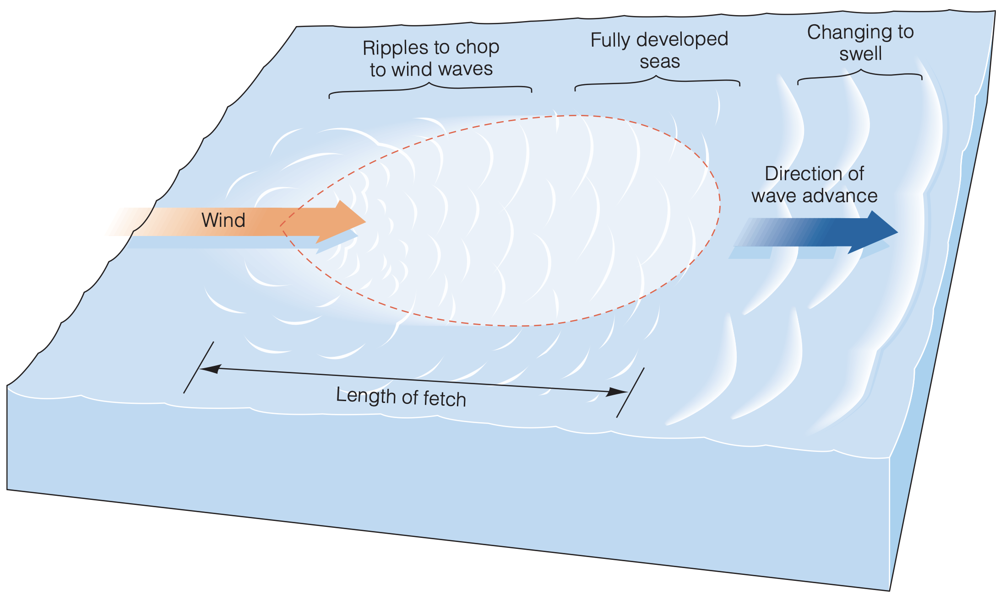
Figure 4: 風浪的生成。
以局部的風暴產生波浪為例 (圖 4)，由於波長較長的波移動得更快，故更快地離開波形成的區域，並超越了較小的波。來自風暴的成熟波浪，將由接近的波長和速度分成相似的波群。波浪分離 (或頻散) 的過程會產生海洋表面熟悉的平滑波動，被稱為 swell (涌浪或長浪，如圖 5)。涌浪經常從風暴移動數千公里到海岸，宣佈風暴即將到來。
Figure 5: 涌浪或長浪 (source: https://surfershype.com/ocean-swell-explained)。
與一般認知可能相反，遠離風暴的觀察者首先會遇到波長較長的大型、快速移動的波浪，然後是中等大小的波浪，最後才是是緩慢的小波。由於水粒子在深水波中的圓形運動幾乎沒有摩擦，所以波會繼續前進，直到它們在海岸上破碎。在碎波帶，波浪以隨機運動、熱量和聲音的形式釋放吸收的風能。
6. 水粒子的運動
如欲計算起動底部沉積物的波浪條件，需要計算波浪中水粒子速度的方法。水粒子的速度、加速度以及波中的壓力場，對於計算各型海岸結構物上的波力都是必需的。
6.1. 水粒子速度與加速度
水粒子速度的水平和垂直分量 (\(u\) 和 \(w\)) 可以從速度勢來決定，其中 \[ u = \frac{\partial\phi}{\partial x},\quad w = \frac{\partial\phi}{\partial z} \] 可得到
\begin{equation} \label{eq:32} u = \frac{H}{2}\omega \frac{\cosh k(h+z)}{\sinh kh}\cos (kx-\omega t) = \frac{\pi H}{T}\frac{\cosh k(h+z)}{\sinh kh}\cos (kx-\omega t) \end{equation} \begin{equation} \label{eq:33} w = \frac{H}{2}\omega \frac{\sinh k(h+z)}{\sinh kh}\sin (kx-\omega t) = \frac{\pi H}{T}\frac{\sinh k(h+z)}{\sinh kh}\sin (kx-\omega t) \end{equation}請注意，每個速度分量由三部分組成：(1) 深水波之表面粒子速度 \(\pi H/T\)，(2) 由雙曲線函數構成之垂直水柱上的粒子速度變化，以及波從深水移動到淺水引起的粒子速度變化，以及 (3) 取決於波中所處位置和時間之相位項。需注意 \(h+z\) 代表到底床的的距離，且水平和垂直速度分量的相位差為 90 度，如圖 6 所示。
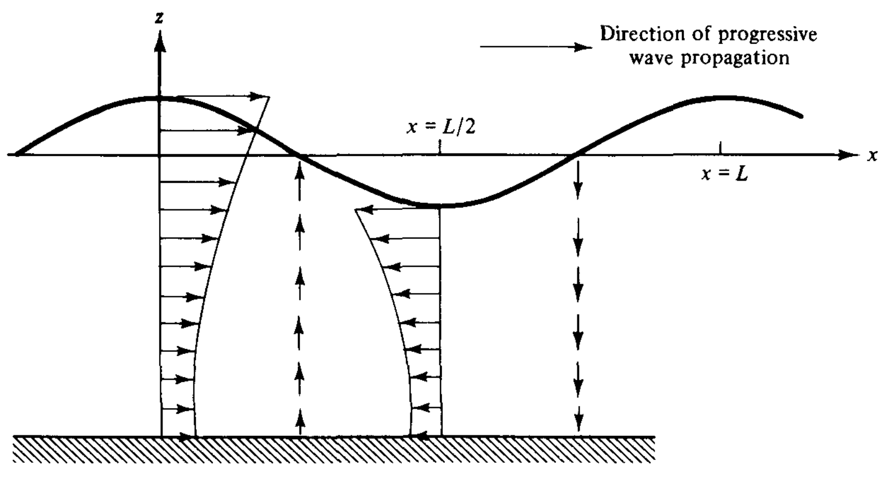
Figure 6: 線性前進波之水粒子速度分佈。
由於在線性條件下，加速度中的對流項 (convective terms) 可以忽略，故加速度的分析以局部加速度 (local acceleration) 為主。水平與垂直之局部加速度分量分別為
\begin{equation} \label{eq:34} \frac{\partial u}{\partial x} = \frac{H}{2}\omega^{2}\frac{\cosh k(h+z)}{\sinh kh}\sin (kx-\omega t) = \frac{2\pi^{2}H}{T^{2}}\frac{\cosh k(h+z)}{\sinh kh}\sin (kx-\omega t) \end{equation} \begin{equation} \label{eq:35} \frac{\partial w}{\partial x} = -\frac{H}{2}\omega^{2}\frac{\sinh k(h+z)}{\sinh kh}\cos (kx-\omega t) = -\frac{2\pi^{2}H}{T^{2}}\frac{\sinh k(h+z)}{\sinh kh}\cos (kx-\omega t) \end{equation}由 cosine/sine 等項可知粒子速度分量與加速度分量有 90 度的相位差。透過沿著圓形軌道的粒子可以看出這一點。粒子速度與圓相切，加速度則朝向圓中心並與速度相垂直。
6.2. 水粒子運動軌跡
當水粒子圍繞平均位置運行時，粒子位置相對於平均位置的水平和垂直座標分別由 \(\zeta\) 和 \(\xi\) 給出。設其平均位置為 \((x_{1,},z_{1})\)，透過粒子速度分量對時間的積分可得到粒子位置分量為
\begin{equation} \label{eq:36} \zeta = \frac{-H}{2}\frac{\cosh k(h+z_{1})}{\sinh kh}\sin (kx_{1}-\omega t) \end{equation} \begin{equation} \label{eq:37} \xi = \frac{H}{2}\frac{\sinh k(h+z_{1})}{\sinh kh}\cos (kx_{1}-\omega t) \end{equation}其中 \(H/2\) 是深水波表面粒子的軌道半徑。式 (\ref{eq:36}), (\ref{eq:37}) 亦可表為
\begin{equation} \label{eq:38} \zeta(x_{1},z_{1},t) = -A\sin (kx_{1}-\omega t) \end{equation} \begin{equation} \label{eq:39} \xi(x_{1},z_{1},t) = B\cos (kx_{1}-\omega t) \end{equation}而其關係為
\begin{equation} \label{eq:40} \left(\frac{\zeta}{A}\right)^{2} + \left(\frac{\xi}{B}\right)^{2} = 1 \end{equation}代表為一半長軸與半短軸分別為 \(A\) 及 \(B\) 之橢圓，如圖 7 所示。需注意 \(A\) 永遠大於或等於 \(B\)。
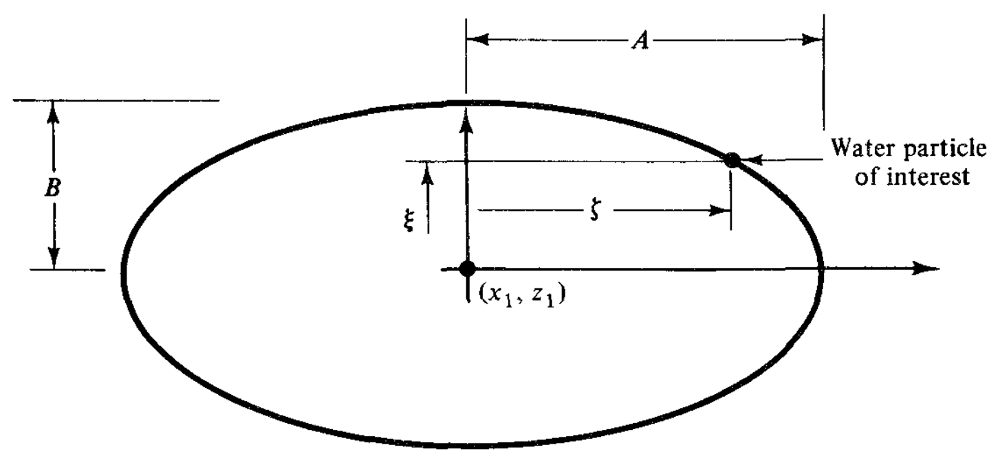
Figure 7: 水粒子的橢圓形運動軌跡。
6.3. 深水至淺水的變化趨勢
當波浪從深水傳播到淺水時，粒子軌道幾何形狀會發生如圖 8 中描述的變換。在深水中，軌道在整個水柱中是圓形的，但直徑隨著水面以下距離的增加而減少，並大約在深度 \(L/2\) 處消失。在過渡到淺水時，軌道到達底部並變得橢圓形，且橢圓形在底床附近變成更加扁平。事實上，粒子的速度和加速度分量在空間上的變化與位移座標具有相同的趨勢。
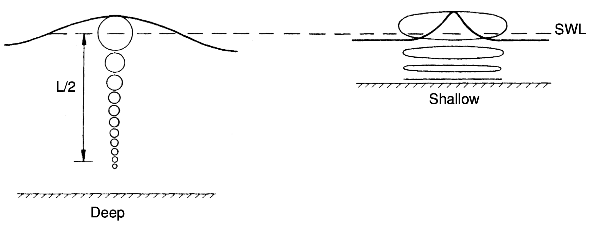
Figure 8: 深水與淺水的粒子運動軌跡。
根據微小振幅波理論，表面波具有正弦波形。這對於深水中的低尖銳度波浪來說是合理的。但是，對於更尖銳的深水波或當波浪傳播到中間水深和淺水時，波形會變成餘擺線形 (trochoidal)，有較長的波谷區和較短的波峰區。峰頂的振幅增加，而波谷的振幅減少。在中間水深和淺水中，粒子仍然在基本上封閉的軌道上移動。由於餘擺線剖面，因此波峰下的最大速度將超過波谷處的最大速度。 與波形不對稱性一樣，這種速度不對稱性是因非線性效應所造成，而不是微小振幅波理論所能預測的。
由雙曲線函數在深水與淺水區中的極限值，也可以看出在粒子速度、加速度與軌跡的變化趨勢。在深水區中， \[ \frac{\cosh k(h+z)}{\sinh kh} = \frac{\sinh k(h+z)}{\sinh kh} = e^{kz}\quad\mbox{in deep water} \] 故可知在深水中粒子速度、加速度和軌道位移隨著靜止水線以下距離的增加而呈指數級衰減。在 \(z = -L/2\) 處，其降低到表面處數值的 4.3%。在淺水處，由於 \[ \frac{\cosh k(h+z)}{\sinh kh} = \frac{1}{kh}, \quad\frac{\sinh k(h+z)}{\sinh kh} = 1+\frac{z}{h}\quad\mbox{in shallow water} \] 故可知淺水處之速度極限值為
\begin{equation} \label{eq:41} u = \frac{H}{2}\sqrt{\frac{g}{h}}\cos (kx-\omega t) \end{equation} \begin{equation} \label{eq:42} w = \frac{\pi H}{T}\left(1+\frac{z}{h}\right)\sin (kx-\omega t) \end{equation}式 (\ref{eq:41}) 表明，在淺水中，水顆粒速度的水平分量從水面到底部是恆定的。從式 (\ref{eq:42}) 中可以看到粒子速度的垂直分量是線性地從水面的最大值下降到底部為零。對於粒子加速度和軌道尺寸，也有類似的趨勢。
7. 壓力場
將速度勢代入線性化的 Bernoulli equation 可得到波浪下的壓力場為
\begin{equation} \label{eq:43} p = -\rho g z + \frac{\rho gH}{2}\frac{\cosh k(h+z)}{\cosh kh}\cos (kx-\omega t) \end{equation}式中右邊的第一項為液靜壓 (hydrostatic pressure) 之變化，第二個項是波浪引致之粒子加速度產生的動壓 (dynamic pressure) 變化。圖 9 顯示了波峰與波谷處之壓力分量的垂直分佈。由於波峰下的粒子正在向下加速，因此需要向下的動壓梯度。在波谷處則相反。在波峰和波谷的中間，加速度是水平的，因此垂直壓力呈液靜壓分佈。由於 DFSBC 的線性化及其在靜水位上的應用，式（\ref{eq:43}）在靜水位以上無效。
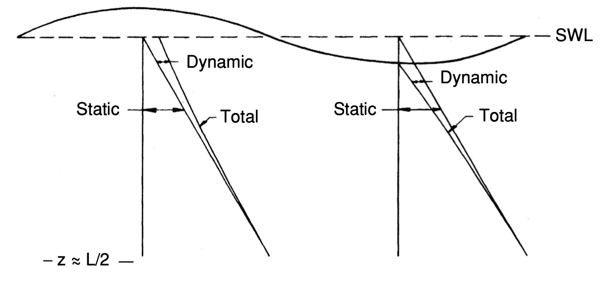
Figure 9: 深水波之壓力垂直分佈。
深水中，在 \(z = -L/2\) 處動壓降至接近零。位於此深度以下的壓力計，基本上將測量到靜水位以下水深產生之液靜壓。位於 \(z = -L/2\) 以上之壓力計可作為測波儀 (wave gage)。壓力振盪的週期即是水波的週期，並可從頻散關係式計算出波長。然後，當壓力計的位置、波週期、波長以及水深是已知時，波高可以從式 (\ref{eq:43}) 計算出來。
在深水與淺水的極限時，由於
\begin{eqnarray*} \frac{\cosh k(h+z)}{\cosh kh} &= e^{kz} \quad&\mbox{(deep water)} \\ &= 1\quad&\mbox{(shallow water)} \end{eqnarray*}故從微小振幅波理論來講，在深水中，動壓也隨著靜水位以下的深度而呈指數衰減。在淺水中，總壓力分佈則呈現液靜壓分佈
\begin{equation} \label{eq:44} p = \rho g(\eta -z) \end{equation}8. 能量及能量傳輸
8.1. 重力水波的能量
重力水波的一個重要特徵是它們具有機械能 (mechanical energy)，並且這種能量在波浪傳播時會向前傳輸。重要的是需能夠量化特定波高、週期和水深的能量以及能量傳輸速率（稱為能量流率, energy flux）。表面重力波中的總機械能是位勢能 (potential energy) 和動能 (kinetic energy) 的總和。
8.2. 位勢能
水波中發生的位勢能，是將質量從與重力場的平衡位置移動的結果。當水以均勻的自由表面高度而靜止時，可以很容易地證明勢能是最小的。然而，讓自由表面的粒子產生位移則需要對系統做功，並導致勢能的增加 (亦即能量以位勢能方式儲存)。
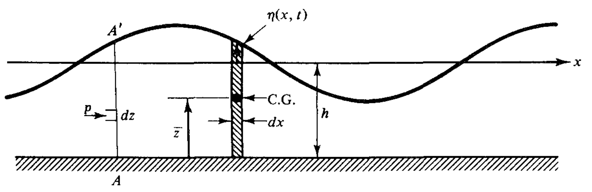
Figure 10: 位勢能示意圖。
此處將透過兩種不同的方法推導出與正弦波相關的勢能。首先考慮圖 10 所示的波；從有波和不存在波的勢能之間的差異，可以得到與波相關的單位表面積的平均勢能。圖 10 所示質量為 \(dm\) 的單位寬度微小水柱體，相對於底床的勢能是
\begin{equation} \label{eq:45} d(\mathrm{PE}) = dmg\bar{z} \end{equation}此處 \(\bar{z}\) 為水柱質量中心至底床的距離
\begin{equation} \label{eq:46} \bar{z} = \frac{h+\eta}{2} \end{equation}而水柱體質量為
\begin{equation} \label{eq:47} dm = \rho(h+\eta)\,dx \end{equation}前進波在一個波長上的平均位勢能為
\begin{equation} \label{eq:48} \begin{split} (\overline{\mathrm{PE}})_{T} &= \frac{1}{L}\int_{x}^{x+L}d(\mathrm{PE}) = \frac{1}{L}\int_{x}^{x+L}\rho g\frac{(h+\eta)^{2}}{2}\,dx\\ &=\frac{\rho g}{L}\int_{x}^{x+L}\left[\frac{1}{2}(h^{2}+2\eta h+\eta^{2})\right]\,dx \end{split} \end{equation}其中下標 \(T\) 表示為總水柱體積之位勢能。將 \(\eta = (H/2)\cos (kx-\omega t)\) 代入上式可得到
\begin{equation} \label{eq:49} (\overline{\mathrm{PE}})_{T} = \rho g\frac{h^{2}}{2} +\rho g\frac{H^{2}}{16} \end{equation}其中右側第一項為靜水位產生之位勢能，第二項才是波浪之位勢能。因此波浪之位勢能為
\begin{equation} \label{eq:50} \overline{\mathrm{PE}} = \frac{\rho gH^{2}}{16} \end{equation}可發現單位水面積之波浪位勢能僅為波高的函數。此外，此結果亦可適用於正弦波產生之駐波 (standing waves)。
8.3. 動能
動能是由於移動的水顆粒所造成；一小塊質量 \(dm\) 的流體之動能為
\begin{equation} \label{eq:51} d(\mathrm{KE}) = dm\frac{u^{2}+w^{2}}{2} = \rho\,dx\,dz\frac{u^{2}+w^{2}}{2} \end{equation}經由對水深與一段波長距離之積分，可以得到單位水面面積之動能為
\begin{equation} \label{eq:52} \overline{\mathrm{KE}} = \frac{1}{L}\int_{x}^{x+L}\int_{-h}^{\eta}\rho\frac{u^{2}+w^{2}}{2}\,dz\,dx \end{equation}將已知的波浪速度代入，可以得到單位水面面積之動能為
\begin{equation} \label{eq:53} \overline{\mathrm{KE}} = \frac{1}{16}\rho g H^{2} \end{equation}可發現動能與位勢能的大小相等，這是保守 (非消散) 系統的一般特徵。
8.4. 總平均能量
水波單位表面積的總平均能量是位勢能和動能的總和，可由 \(\bar{E}\) 表示之
\begin{equation} \label{eq:54} \bar{E} = \overline{\mathrm{KE}} + \overline{\mathrm{PE}} = \frac{1}{8}\rho g H^{2} \end{equation}而對於一段波浪 (在一個波長內) 之單位寬度總能量則為
\begin{equation} \label{eq:55} E = \frac{1}{8}\rho g H^{2}L \end{equation}8.5. 能量流率 (energy flux)
維小振幅水波在流體中傳播時不會傳輸質量，因為水粒子的軌跡是封閉的。然而水波確實傳遞能量。例如石頭撞擊最初靜止水面產生的波，石頭的部分動能轉化為波能。隨著這些波浪向海岸線移動，並可能在海岸線上破裂，很明顯，能量已經從最初的產生處轉移出來了。 能量傳輸的速度稱為能量流率 (energy flux \(\mathcal{F}\))，對於線性理論來說，它是流體在另一垂直部分的一側做功的速率。如圖 10，對於垂直斷面 \(AA'\)，動壓 (\(p_{D} = p + \rho g z\)) 在波傳播方向上每單位寬度的瞬時做功速率是
\begin{equation} \label{eq:56} \mathcal{F} = \int_{-h}^{\eta}p_{D} u\,dz \end{equation}平均能量流率可透過在一個波浪週期的平均值獲得
\begin{equation} \label{eq:57} \bar{\mathcal{F}} = \frac{1}{T}\int_{t}^{t+T}\int_{-h}^{\eta}p_{D}u\,dz\,dt =\left(\frac{1}{8}\rho g H^{2}\right)\frac{\sigma}{k}\left[\frac{1}{2}\left(1+\frac{2kh}{\sinh 2kh}\right)\right] \end{equation}如定義
\begin{equation} \label{eq:58} n = \frac{1}{2}\left(1+\frac{2kh}{\sinh 2kh}\right) \end{equation}則平均能量流率可表為
\begin{equation} \label{eq:59} \bar{\mathcal{F}} = \bar{E}Cn \end{equation}其中 \(\bar{E}\) 即為總平均能量，\(C = \sigma/k\) 為波速。而 \(Cn\) 則為能量傳遞的速度；下一節會證明，此速度即為波群 (即一群頻率與波長接近的波浪) 的速度，稱為群速 (group velocity, \(C_{g}\), 見下節):
\begin{equation} \label{eq:60} C_{g} = nC \end{equation}亦即，\(n\) 為群速與波速之比值
\begin{equation} \label{eq:61} n = \frac{C_{g}}{C} = \frac{1}{2}\left(1+\frac{2kh}{\sinh 2kh}\right) \end{equation}在深水和淺水中，參數 \(n\) 的極限值分別為 1/2 與 1 。因此在深水中能量僅以波速的一半傳輸；在淺水中水波和能量則以同樣的速度行進。
另一個有用的能量流率表示方式為
\begin{equation} \label{eq:69} \bar{\mathcal{F}} = \bar{E}Cn = \bar{E}\left(\frac{L}{T}\right)n = \frac{nE}{T} \end{equation}式 (\ref{eq:69}) 表明，\(n\) 可以解釋為每個波週期向前傳輸的波中機械能的比例。
8.6. 群速 (group velocity)
此處將由波群的傳輸推導出群速。如果有兩列相同高度的波向同一方向傳播，頻率和波數略有不同，可由線性疊加得到
\begin{equation} \label{eq:62} \eta = \eta_{1} + \eta_{2} = \frac{H}{2}\cos(k_{1}x-\omega_{1}t) +\frac{H}{2}\cos(k_{2}x-\omega_{2}t) \end{equation}其中 \[ \omega_{1}=\omega-\frac{\Delta\omega}{2},\quad k_{1} = k-\frac{\Delta k}{2} \] \[ \omega_{2}=\omega+\frac{\Delta\omega}{2},\quad k_{2} = k+\frac{\Delta k}{2} \] 由三角函數的疊加原理，可以得到
\begin{eqnarray} \label{eq:63} \eta &= H\cos\left[\frac{1}{2}[(k_{1}+k_{2})x-(\omega_{1}+\omega_{2})t]\right] \cos\left[\frac{1}{2}[(k_{1}-k_{2})x-(\omega_{1}-\omega_{2})t]\right]\nonumber\\ &= H\cos(kx-\omega t)\cos\left[\frac{1}{2}\Delta k\left(x-\frac{\Delta\omega}{\Delta k}t \right) \right] \end{eqnarray}由此產生的波形由以速度 \(C = \omega/k\) 移動的波所組成，並由以速度 \(\Delta \omega/\Delta k\) 傳播的 ``包絡'' 調製，此包絡波形的速度被稱為群速 \(C_{g}\)。疊加的波形如圖 11 所示 (亦可見此動畫)。如果我們回憶起波能正比於波高，可知任何能量都不能透過節點傳播，因為那裡的波高 (以及動壓) 為零。 因此，能量必須以波群的速度傳播
\begin{equation} \label{eq:64} C = \frac{\Delta\omega}{\Delta k} \end{equation}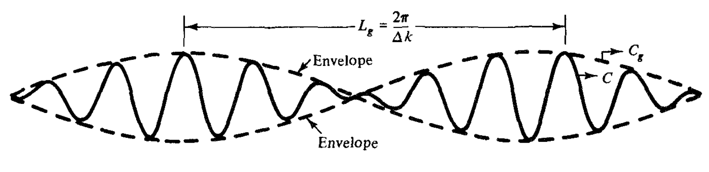
Figure 11: 波群示意圖。
令 \(\Delta k\to 0\) 可得到無限長群波之群速，即 \(C_{g} = d\omega/dk\)。由頻散關係式可得 \[ \omega^{2} = gk\tanh kh,\quad 2\omega\frac{d\omega}{dk} = g\tanh kh + gkh\mathrm{sech}^{2}kh \] 則
\begin{equation} \label{eq:65} C_{g} = \frac{d\omega}{dk} = \frac{(g\tanh kh + gkh\mathrm{sech}^{2}kh)\omega}{2gk\tanh kh} = \frac{1}{2}\left(1+\frac{2kh}{\sinh 2kh}\right)C = nC \end{equation}前面已介紹到 \(n\) 值在深水和淺水的極限值分別為 1/2 與 1，這個細節的含義令人驚訝。儘管在深水中每個波都以與波長成正比的速度 \(C\) 向前移動，但波群本身只以一半的速度向前移動。因此，波群以群內單個波的一半速度向前移動。
考慮一個很長且水深固定的造波水槽，其中產生一小群深水波。當波浪沿著水槽移動時，波群前方的波高會逐漸下降。如果水槽足夠長，由波群中最初的波開始依序消散。隨著前面的波浪之波高減弱，新的波浪將出現在群的後面，並開始生長。每個週期都會出現一個新波，因此群中的波總數將持續增加。這種現象導致波群的速度小於群中單個波的速度。由於該群中的總能量是恆定的（忽略耗散），該群中波的平均高度將持續下降。群波的特性前面的小節已有介紹。
請注意，單個波浪不會在海洋中持續存在。單個波浪將持續地穿越波群。不過只有深水波才會受到頻散的影響。當深水波進入淺水時，群內單個波的速度會減慢，直到波速等於群速。
9. 能量守恆分析
9.1. 前進波的能量守恆
當一列波向前傳播時，一個點的能量流率必須等於後續點的能量流率減去增加的能量，再加上兩個點之間每單位時間耗散和反射的能量。如使用初階的工程分析探討在合理短距離上傳播的波，通常忽略了能量的新增、耗散或反射，故
\begin{equation} \label{eq:70} \bar{\mathcal{F}} = \left(\frac{nE}{T}\right)_{1} = \left(\frac{nE}{T}\right)_{2} = \mbox{constant} \end{equation}式 (\ref{eq:70}) 表明，基於以上的假設，當二維波從深水傳播到近岸時，\(n\) 值由 0.5 趨近於 1，而波列中的能量隨著 \(n\) 的增加而反比下降，因為波週期是恆定的。
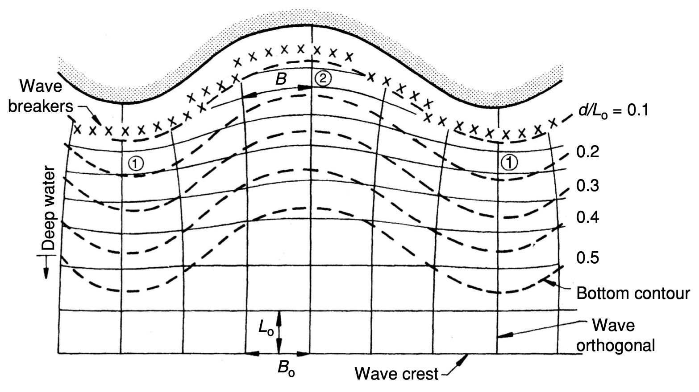
Figure 12: 波浪折射趨勢圖。
9.2. 波的淺化與折射效應
如圖 12， 當波浪以一定角度接近海岸並在不規則的海底地貌上傳播時，由於折射，波浪會呈現三維的變化。如果在波前進方向繪出與波峰正交的線 (稱為射線，ray)，並假設沒有能量沿著波峰傳播（即跨越正交線），則可以假定正交區間內的能量流率是恆定的。如果正交間距用 \(B\) 表示，則在兩條射線間式 (\ref{eq:70}) 可以寫為
\begin{equation} \label{eq:71} \left(\frac{BnE}{T}\right)_{1} = \left(\frac{BnE}{T}\right)_{2} = \mbox{constant} \end{equation}將式 (\ref{eq:55}) 之總能量表示式代入，可得
\begin{equation} \label{eq:72} \frac{H_{1}}{H_{2}} = \sqrt{\frac{n_{2}L_{2}}{n_{1}L_{1}}}\sqrt{\frac{B_{2}}{B_{1}}} \end{equation}式 (\ref{eq:73}) 可讓我們計算水波從一個水深傳播到另一個水深時波高的變化。一般來說，波浪的預測是從某個深水位置開始，並向中間水深或近岸的淺水區傳遞。如此式 (\ref{eq:73}) 可改寫為
\begin{equation} \label{eq:74} \frac{H}{H_{0}} = \sqrt{\frac{L_{0}}{2nL}}\sqrt{\frac{B_{0}}{B}} = \sqrt{\frac{C_{0}}{2C_{g}}}\sqrt{\frac{B_{0}}{B}} = K_{s} K_{r} \end{equation}右側的第一項表示地形淺化的效應，第二個項則表示正交線收斂或折射發散的效應。此兩項通常分別稱為淺化係數 (shoaling coefficient) \(K_{s}\) 和折射係數 (refraction coefficient) \(K_{r}\)
\begin{equation} \label{eq:73} K_{s} = \sqrt{\frac{L_{0}}{2nL}} = \sqrt{\frac{C_{0}}{2C_{g}}},\, K_{r} = \sqrt{\frac{B_{0}}{B}} \end{equation}淺化係數隨相對水深之變化趨勢如圖 13 所示。
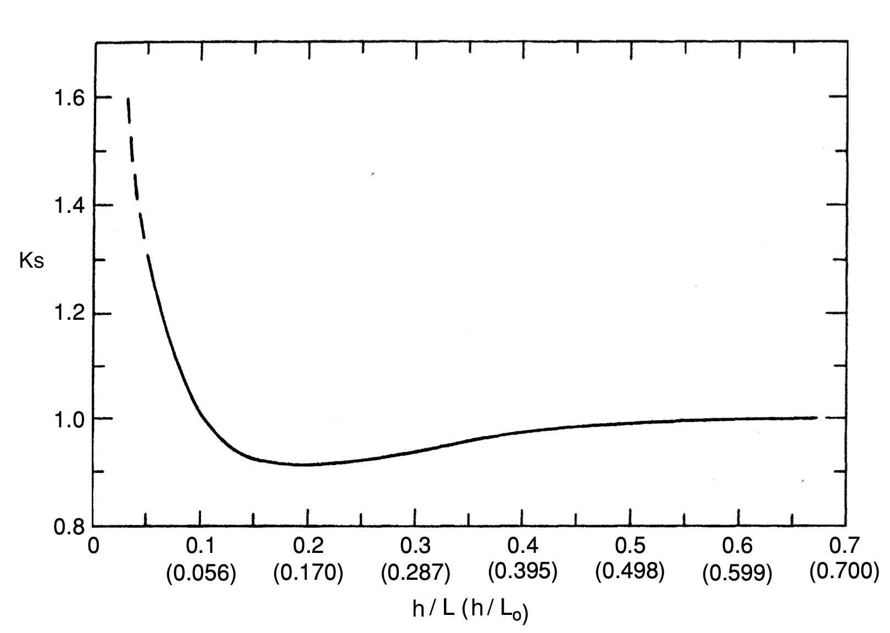
Figure 13: 淺化係數 \(K_s\) 隨相對水深之變化。
例題 3.3
考慮例題 3.1 中的波，假設能量之增損均可忽略，當波在不折射的情況下傳播到 10 m 的水深時，計算出波峰處靜水位以下 1 m 處的波高、水顆粒速度和壓力。 (假設流體為純水。)
解答: 此波之深水波長 \(L_{0} = 156~\mathrm{m}\), 則水深 10 m 處之波長可由式 (\ref{eq:19}) 得到 \[ L = \frac{9.81(10)^{2}}{2\pi} \tanh\frac{2\pi(10)}{L} \] 由試誤法可得 \(L = 93.3~\mathrm{m}\)。則 \(k = 2\pi/93.3 = 0.0673~\mathrm{m}^{-1}\) 且 \[ n = \frac{1}{2}\left(1+\frac{2(0.0673)(10)}{\sinh (2(0.0673)(10))} \right) = 0.873 \] 令 \(k_{r}=1\), 則由式 (\ref{eq:74}) 可得 \[ H = 2\sqrt{\frac{156}{2(0.874)(93.3)}} = 1.97~\mathrm{m} \] 在波峰處 \(\cos(kx-\omega t) = 1\), 且 \(z=-1\), 則由式 (\ref{eq:32}) 可得 \[ u = \frac{\pi(1.97)}{10}\left[\frac{\cosh (0.0673)(9)}{\sinh (0.0673)(10)} \right] = 1.01~\mathrm{m/s} \] 且 \(w = 0\)。壓力可由式 (\ref{eq:43}) 得到 \[ p = -1000(9.81)(-1)+\frac{1000(9.81)(1.97)}{2}\left[\frac{\cosh (0.0673)9}{\cosh (0.0673)10} \right] = 19,113~\mathrm{N/m^{2}} \]
要注意式 (\ref{eq:70}) 至 (\ref{eq:74}) 忽略了水面和底床對水波的能量傳輸。以下將簡短討論這些效應的性質。當然，底床效應之前提是水深足夠淺，以致波列和底床之間有強烈的相互作用。
9.3. 水面和底床對能量傳輸的影響
9.3.1. 波的反射 (Wave Reflection)
如果底床不是水平的，入射波能量的一部分將向海反射。對於典型的近岸斜坡上的風浪週期，這種反射通常可以忽略不計。然而，對於較長週期的波浪和陡峭的底坡，波浪反射不能被忽略不計。任何陡峭的底床不規則性，如有顯著尺寸的潛沒結構物，也會反射入射波能量中相當大的一部分。
9.3.2. 風的效應
一般來說，如果風在波傳播方向上有一個超過波速的速度分量，風將為波增加能量。如果速度分量小於波速或風吹與波傳播方向相反，風將從波中去除能量。對於大多數沿海地區的典型非暴風條件，以及從深水到近岸地區的多數區域，在分析近岸波浪條件時可以忽略風力的效應。
9.3.3. 底床摩擦
當波浪中的水粒子運動與靜止底部相互作用時，底部附近會形成一個非穩態振盪邊界層。對於相對淺水中的長週期波浪，這個邊界層可以延伸到大部分的水體。但是對於典型的風波，邊界層相對於水深則非常薄。如果傳播距離不是太長，底部也不太粗糙，則可以忽略底部摩擦能量損失。
9.3.4. 底床滲透性
如果底床之一定深度具透水性，則底部的水波動壓分佈將導致水滲入和滲出第床，從而消散波能。
9.3.5. 底床之運動
當波列在由柔軟粘稠材料（如沉積在密西西比河三角洲的泥漿）組成的底床上傳播時，底部的擾動壓力可以使底床運動。軟性底床的黏滯應力會耗散波提供的能量。
10. 駐波 (Standing Waves) 及其反射
10.1. 垂直壁面之反射將造成駐波
固體結構物，如垂直牆壁，將反射入射波，而反射波的振幅將依入射波與壁面的特徵而有所不同。而當反射波穿過入射波時將形成駐波 (standing waves)。波浪反射之特性和駐波的性質值得研究，特別是由此產生的波運動的水波剖面和粒子運動，以及反射波特性與反射結構物的構造之相關。
10.2. 駐波之分析
考慮兩個波的波高和週期相同，但沿著 \(x\) 軸反向傳播。當這兩個波疊加時，產生的波動即是駐波，如圖 14 所示。水面在一個週期中從一個位置振盪到另一個位置，然後在回到原始位置。箭頭指示水粒子振盪的路徑。在節點上，粒子在水平面上振盪；而在反節點下，它們在垂直面上振盪。當表面處於所示的兩個包絡位置之一時，水粒子會瞬間休息，故所有的波能都是位勢能。在包絡的一半位置之間，水面是水平的，而所有能量都是動能。淨能量流率 (如果兩個成分波是一致的) 將為零，因為群速為零，波群並不移動。
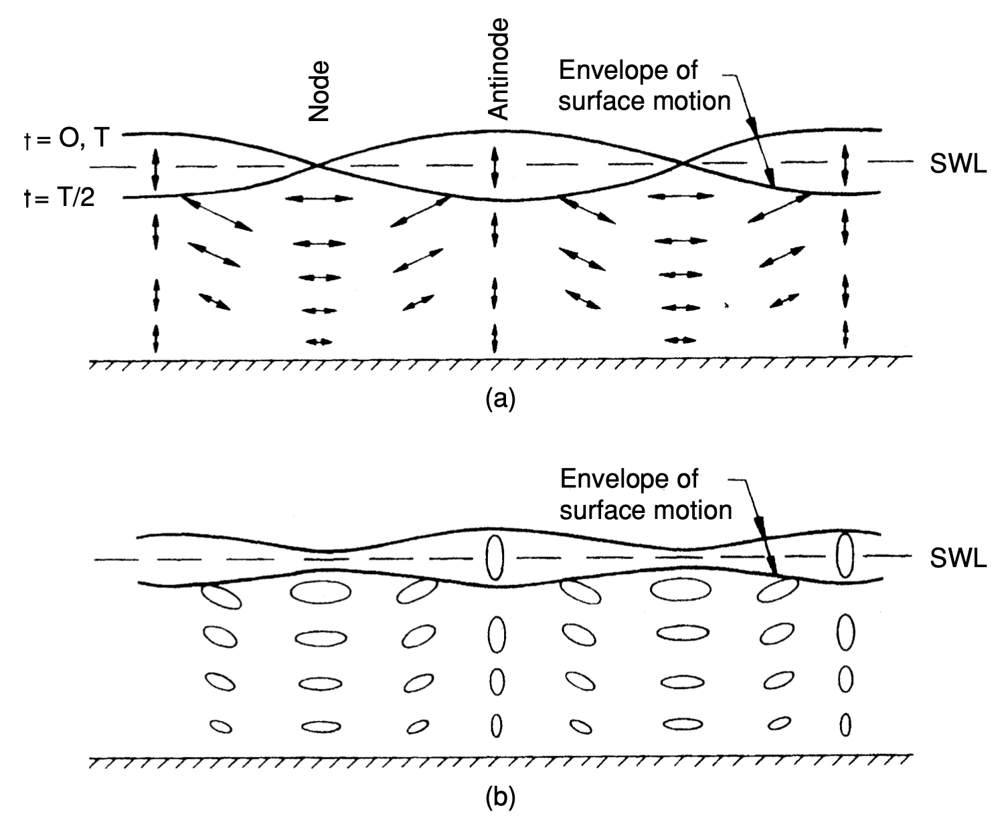
Figure 14: 不同反射率之駐波: (a) \(C_{r} = 1.0\), (b) \(C_{r} < 1.0\)。